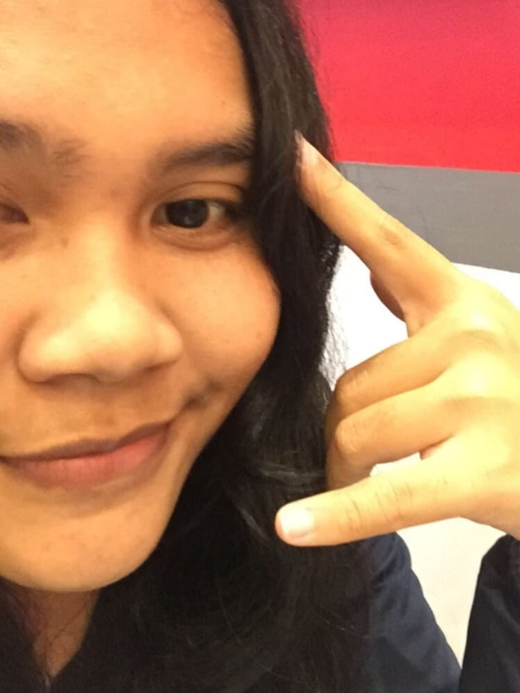
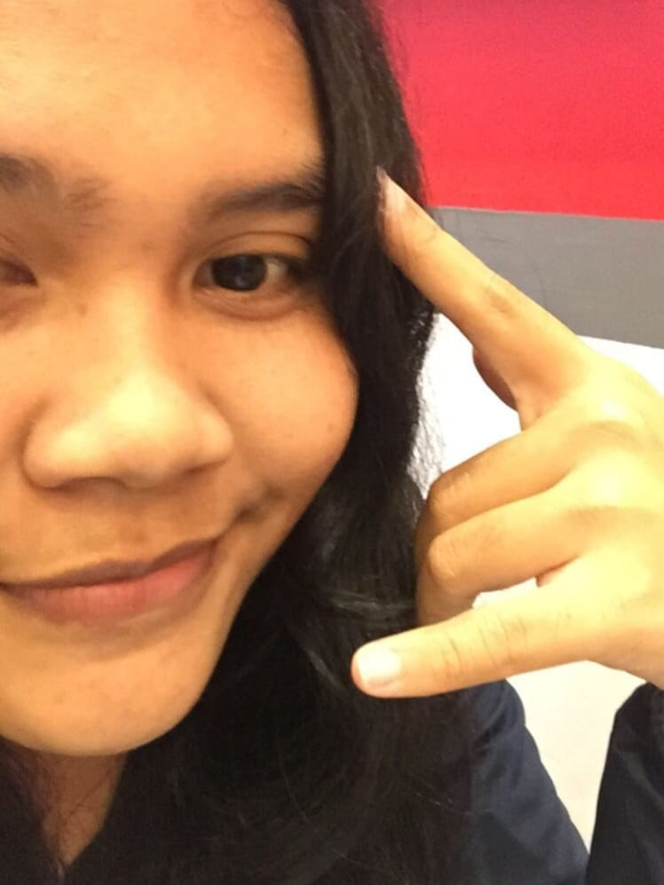

SD KRISTEN HARAPAN
SMPN 6 DENPASAR
SMKN 1 DENPASAR
 

|| KOMANG SRI WAHYUNI ||
Halo Halo~! Semuanya kenalin aku Komang Sri panggil aja Mangsri. Aku merupakan salah satu orang yang membuat website ini. Aku bangga sih udah bisa buat website ini walaupun masih banyak kurangnya, Maklumin aja yah. Tapi walaupun kurang bagus kami udah buat website ini dengan maksimal. Ngomong-ngomong aku lahir di Denpasar pada tanggal 13 Mei 2008. Sekarang aku tinggal di Jln. Suwung Batan Kendal No.41. Aku memiliki 1 Saudara Laki-laki dan 1 Saudara perempuan dengan total 5 anggota keluarga termasuk aku. Sekarang aku bersekolah di SMK Negeri 1 Denpasar dengan mengambil jurusan RPL yaitu Rekayasa Perangkat Lunak. Aku menjadi salah satu murid di Kelas XI RPL 3 dan memiliki nomor absen 27.
Diumur ku yang ke enam belas ini aku punya suatu mimpi, yakni menjadi orang kaya yang harta nya ga pernah habis. Tapi aku tau perjalananku masih jauh, jadi jalani saja hari dengan semangat. Tapi gapapa deh semoga aja di masa depan aku jadi orang sukses. Ngomong-ngomong aku suka banget sama kucing, dirumah aku memiliki banayak kucing.
Baca Novel
Mencari Kesibukan
Main Game
"LEAVE ALL YOUR WORRIES WITH HIM, BECAUSE HE CARES FOR YOU"